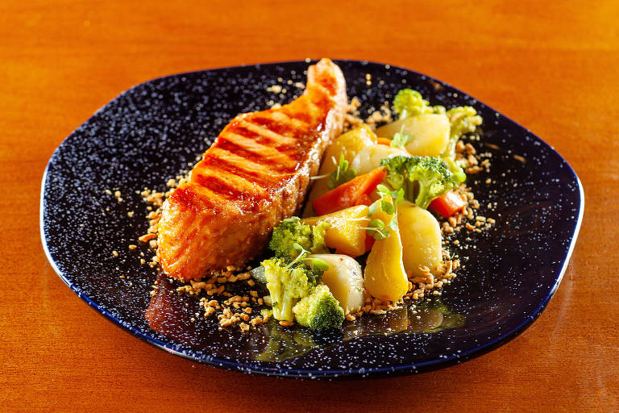
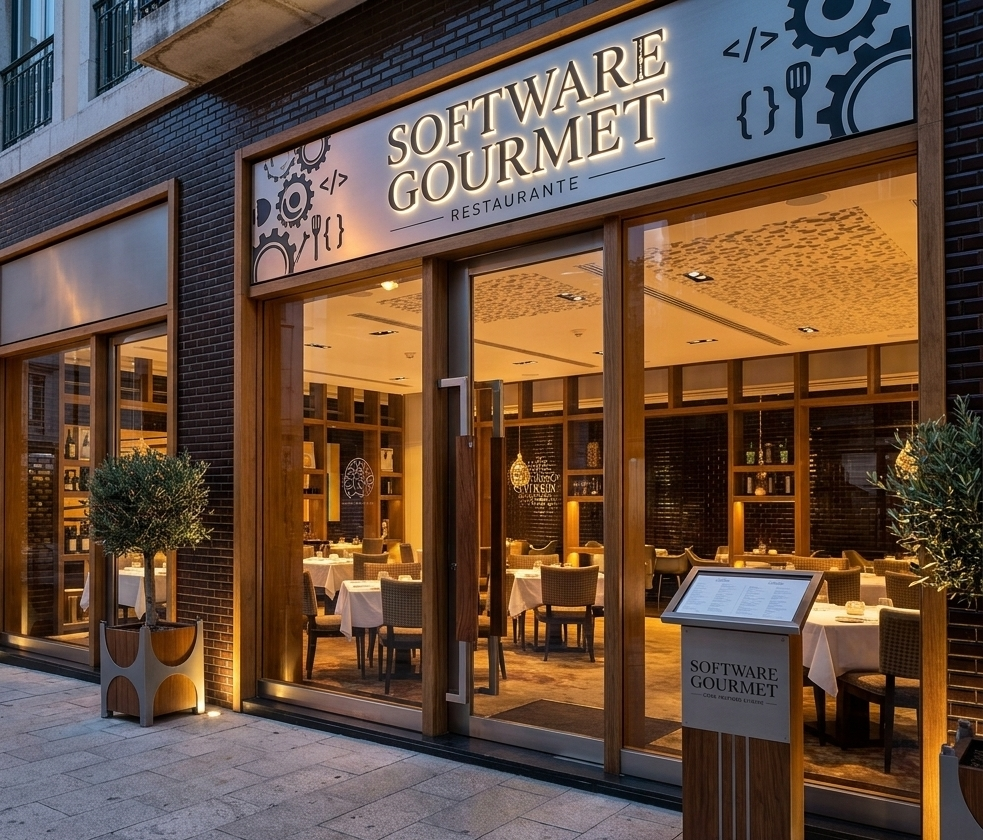
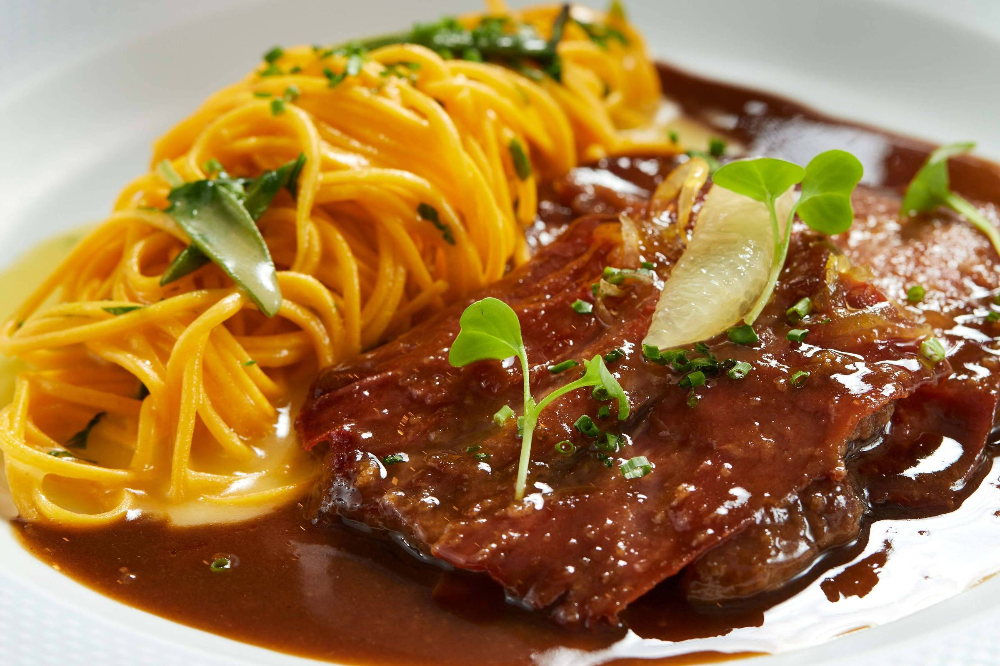
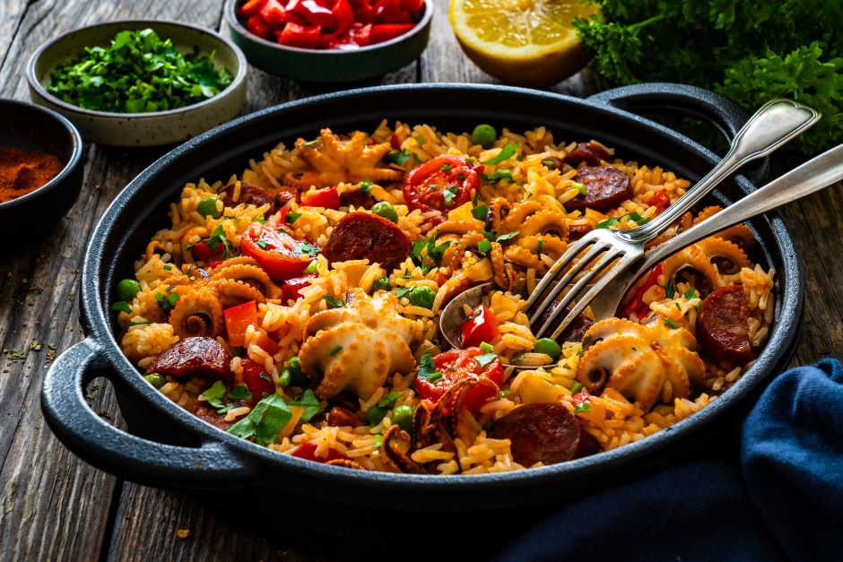
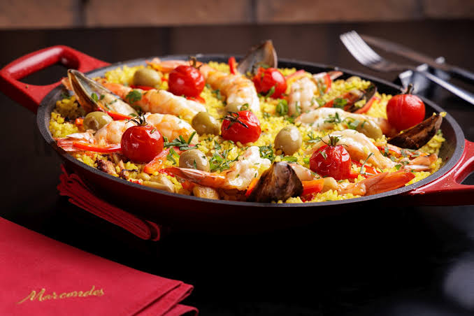
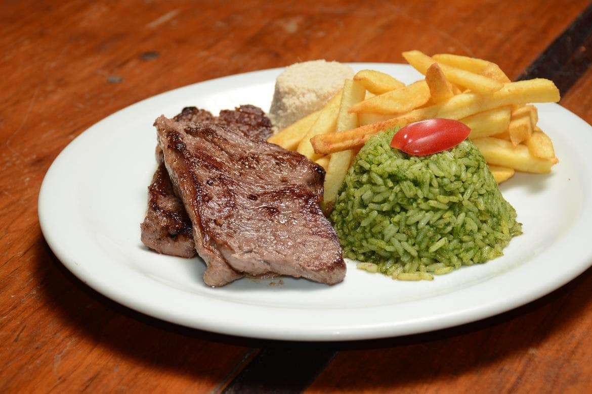
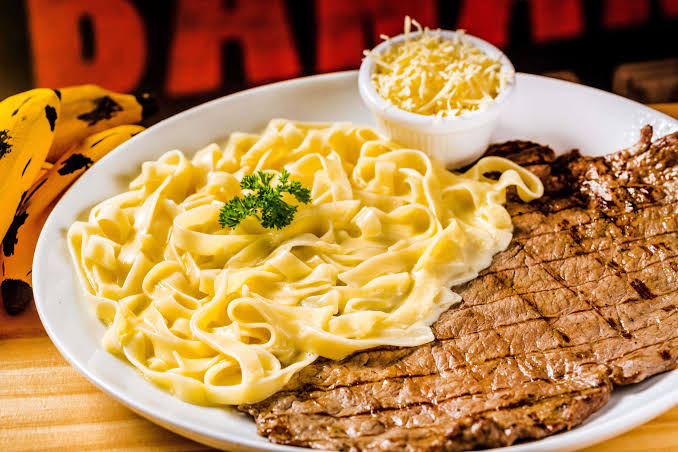

Salmão Grelhado
Posta de salmão grelhada com brócolis, batatas e cenoura.
R$ 72,00Descubra o melhor da culinária com nossos pratos exclusivos!

O Software Gourmet é um restaurante que oferece uma experiência gastronômica única, combinando sabores autênticos e ingredientes frescos para criar pratos deliciosos.

Posta de salmão grelhada com brócolis, batatas e cenoura.
R$ 72,00
Carne macia ao molho especial, acompanhada de talharim artesanal.
R$ 68,00
Arroz cremoso com polvo, chouriço, pimentões e ervilhas.
R$ 79,00
Camarões, mexilhões e azeitonas sobre arroz com açafrão.
R$ 89,00
Bife grelhado, arroz verde, batata frita e farofa.
R$ 54,00
Fettuccine ao molho branco com parmesão e bife grelhado.
R$ 62,00Sim! Recomendamos reservar com antecedência, principalmente nos fins de semana.
Aceitamos dinheiro, cartões de débito e crédito e Pix.
Sim, temos pratos vegetarianos. Consulte nossa equipe para saber as opções do dia.
Sim, oferecemos estacionamento para nossos clientes próximo ao restaurante.